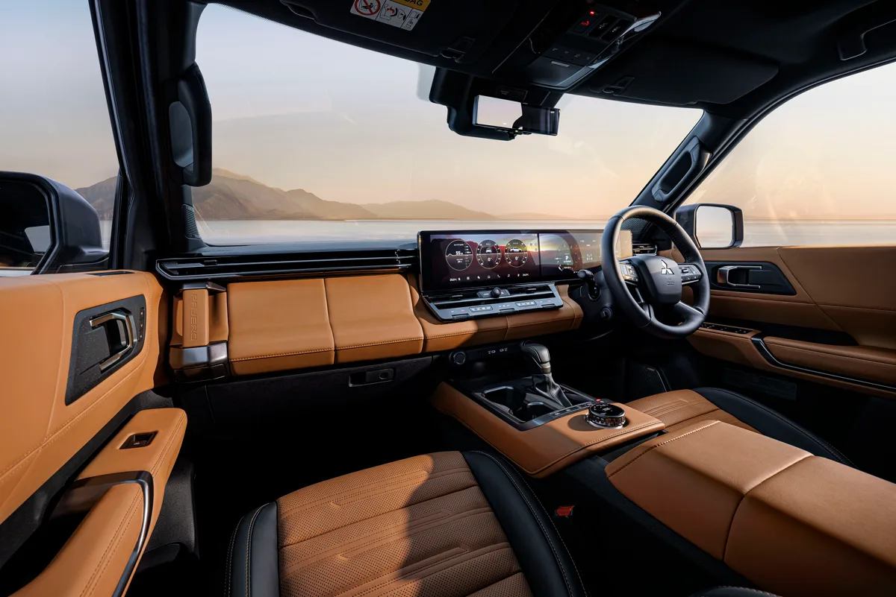

▲ 미쓰비시가 세계 최초로 공개한 완전변경 파제로. 호주에는 2026년 12월부터 판매된다 ⓒ 미쓰비시자동차
미쓰비시가 2026년 9월 2일 세계 최초로 공개한 완전변경 파제로의 호주 판매 가격을 발표했다. 기본형인 GLS(5인승)가 도로세 별도 6만 8,490호주달러부터 시작해, 같은 체급의 경쟁 모델인 토요타 랜드크루저 프라도(7만 3,200호주달러부터)보다 약 5,000호주달러 저렴하게 책정됐다. 호주에서는 이미 3,000명 넘는 잠재 고객이 사전 관심을 등록한 상태다.
1. 가격 — 프라도보다 저렴한 진입 장벽
▲ 신형 파제로 후면. 가로로 이어진 테일램프에 'PAJERO' 레터링이 새겨졌다 ⓒ 미쓰비시자동차
| 트림 | 가격(호주달러, 도로세 별도) |
|---|---|
| GLS (5인승) | 68,490 |
| GLS (7인승) | 69,990 |
| Exceed | 79,990 |
| GSR | 84,990 |
| 참고: 토요타 랜드크루저 프라도 | 73,200부터 |
미쓰비시는 신형 파제로를 포드 에베레스트, 토요타 랜드크루저 프라도와 정면 경쟁시킬 계획이다. 기본형 가격을 프라도보다 낮게 책정한 것은, 정통 오프로더 시장에서 가격 경쟁력을 앞세워 점유율을 넓히려는 전략으로 읽힌다.
2. 플랫폼 — 트라이톤의 뼈대를 그대로
▲ 신형 파제로는 픽업트럭 트라이톤의 래더프레임을 기반으로, 캐빈과 전후 서스펜션을 별도로 개발했다 ⓒ 미쓰비시자동차
신형 파제로는 미쓰비시의 픽업트럭 트라이톤에 쓰이는 견고한 래더프레임 구조를 기반으로 한다. 다만 캐빈과 전후 서스펜션은 파제로 전용으로 새로 개발했다. 여기에 미쓰비시의 사륜구동 기술을 집약한 '슈퍼 셀렉트 4WD-II' 시스템이 더해져, 포장도로를 벗어난 험로에서의 주파 능력을 강조한다. 파워트레인은 2.4리터 터보디젤 4기통 엔진이 201마력(150kW), 480Nm의 토크를 내며 8단 자동변속기와 맞물린다.
3. 디자인 — 각진 존재감으로 회귀
외관은 기존 미쓰비시 SUV 라인업보다 훨씬 박스형이고 곧은 실루엣을 갖췄다. 넓은 그릴과 얇은 LED 헤드램프, 두툼한 전면 범퍼가 강한 사륜구동 SUV의 인상을 강조한다. 정통 오프로더로서의 존재감을 부각하려는 의도가 뚜렷하다.
4. 실내 — 디지털화됐지만 물리 버튼은 남겼다

▲ 신형 파제로 실내. 디지털 계기판과 대형 인포테인먼트 화면을 갖추면서도 핵심 기능은 물리 버튼으로 남겼다 ⓒ 미쓰비시자동차
실내에는 디지털 계기판과 대형 인포테인먼트 디스플레이가 탑재돼 현대적인 느낌을 강조하면서도, 공조 등 자주 쓰는 핵심 기능은 물리 버튼으로 남겨뒀다. 오프로드 주행 중에도 조작 실수를 줄이려는 실용적인 선택으로 풀이된다.
5. 정리 — 국내 출시는 미정
체크포인트
- 이번 가격·출시 일정은 호주 시장 기준이며, 국내 출시 여부와 시점은 별도로 확인되지 않았다.
- 경쟁 모델인 랜드크루저 프라도보다 기본형 기준 약 5,000호주달러 저렴하게 책정됐다.
- 호주 인도는 2026년 12월부터 시작될 예정이다.
미쓰비시코리아가 현재 국내에서 아웃랜더 PHEV·ASX 등을 판매 중인 만큼, 신형 파제로의 국내 도입 여부는 앞으로 나올 별도 발표를 지켜봐야 한다.